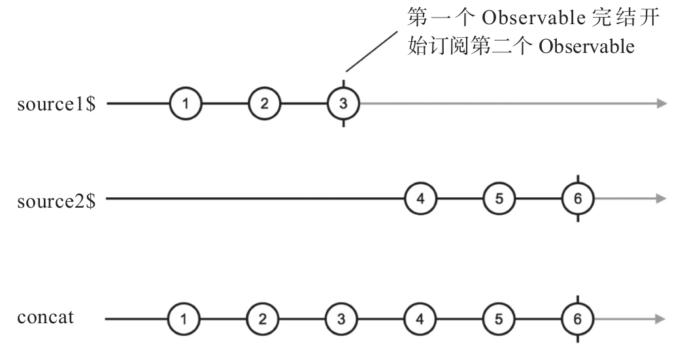

concat是concatenate的缩写，意思就是“连锁”，各种语言各种库中都支持名为concat方法。在JavaScript中，数组就有concat方法，能够把多个数组中的元素依次合并到一个数组中，如下代码所示：
const a1 = [1, 2, 3]; const a2 = [4, 5, 6]; a1.concat(a2); // [1, 2, 3, 4, 5, 6]
Observable的concat方法和数组类似，能够把多个Observable中的数据内容依次合并，类似上面的代码，在RxJS中是这样写的：
import 'rxjs/add/observable/of'; import 'rxjs/add/operator/concat'; const source1$ = Observable.of(1, 2, 3); const source2$ = Observable.of(4, 5, 6); const concated$ = source1$.concat(source2$);
有意思的是，concat既有实例操作符方式，也有静态操作符方式，上面使用的是concat的实例函数方式，我们也可以使用concat的静态函数方式，代码如下：
import 'rxjs/add/observable/of'; import 'rxjs/add/observable/concat'; const source1 = Observable.of(1, 2, 3); const source2 = Observable.of(4, 5, 6); const concated$ = Observable.concat( source1, source2 );
可以看到，要使用Observable.concat这样的静态函数用法，导入的语句就会有不同，是从rxjs/add/observable/下的concat导入，而不是从rxjs/add/operator/下的concat导入。
因为导入的文件不同，所以虽然同为concat这个名称，实际上这是两个不同的操作符函数。
concat的工作方式是这样：
1）从第一个Observable对象获取数据，把数据传给下游。对于实例操作符用法，第一个Observable就是调用concat的那个对象；对于静态操作符用法，第一个Observable是concat第一个参数。
2）当第一个Observable对象complete之后，concat就会去subscribe第二个Observable对象获取数据，把数据同样传给下游。
3）依次类推，直到最后一个Observable完结之后，concat产生的Observable也就完结了。
上面的例子中，concat合并了两个Observable对象，实际上，concat没有限制参数的个数，可以把任意数量的Observable对象合并，下面就是合并3个Observable对象的代码示例：
const source1$ = Observable.of(1, 2, 3); const source2$ = Observable.of(4, 5, 6); const source3$ = Observable.of(7, 8, 9); const concated$ = source1$.concat(source2$, source3$);
接下来我们看concat功能的弹珠图展示，和之前的创建类操作符不同，合并类操作符都有上游Observable，所以描述concat功能的弹珠图都包含多条数据流的横轴，最后一条横轴代表操作符返回的Observable对象，其余的都是操作符输入的Observable对象。
图5-2展示了concat的功能，假设concat有两个输入，分别称为source1$和source2$。source1$产生的所有数据全都被concat直接转给了下游，当source1$完结的时候，concat会调用source1$.unsubscribe，然后调用source2$.subscribe，继续从source2$中抽取数据传给下游。

图5-2 concat的弹珠图
因为concat开始从下一个Observable对象抽取数据只能在前一个Observable对象完结之后，所以参与到这个concat之中的Observable对象应该都能完结，如果一个Observable对象不会完结，那排在后面的Observable对象永远没有上场的机会，比如下面的代码：
const source1$ = Observable.interval(1000); const source2$ = Observable.of(1); const concated$ = source1$.concat(source2$);
其中，source2$中的数据永远不会被获取到，因为source1$由interval产生，是一个永不终结的数据流，既然source1$不完结，就永远轮不到source2$上场。